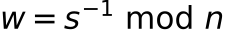
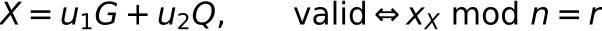
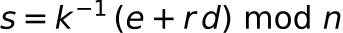
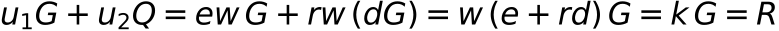

If X is the point at infinity O, reject.
Bob receives a message m, a signature (r, s) and Alice's public key Q = d·G. He never learns Alice's private key d or her nonce k. Still, he can check that only someone who knew d could have produced s.
Alice picked a secret nonce k, computed R = k·G and r = xR mod n, hashed the message to e, then



From the signing equation, k = s−1(e + r·d) = w·(e + r·d) mod n. The verifier does not know d, but Q = d·G carries it "inside a point":

So X is exactly the signer's point R, and its x-coordinate reduced mod n is r. If the message, r, s or the key is different, w·(e + r·d) is a different number, X lands on a different point, and the comparison fails (except with negligible probability).
Why multiply by G instead of solving for d? Going from Q = d·G back to d is the elliptic-curve discrete logarithm problem, which is infeasible on a 256-bit curve. Verification only ever moves forward (number → point), never backward.
Curve y² = x³ + 2x + 2 mod 17, G = (5, 1), n = 19. Alice's key is d = 7, so Q = 7G = (0, 6). She signed a message with hash e = 26 using k = 10, so R = 10G = (7, 11), r = 7, s = 17.
| Step | Computation | Result |
|---|---|---|
| Range | 1 ≤ 7, 17 ≤ 18 | ok |
| w | 17−1 mod 19 | 9 (17·9 = 153 = 8·19 + 1) |
| u1 | 26·9 mod 19 | 6 |
| u2 | 7·9 mod 19 | 6 |
| X | 6G + 6Q = (16, 13) + (3, 1) | (7, 11) |
| Compare | 7 mod 19 = r? | 7 = 7: VALID |
Now change the message so its hash is 25 instead of 26. Then u1 = 25·9 mod 19 = 16, u2 = 6, and X = 16G + 6Q = 16G + 42G = 58G = 1G = (5, 1). Since 5 ≠ 7, the signature is INVALID: one changed bit in the hash moved X to a completely different point.
Skipping the range check is a real bug, not a formality. In 2022, Java 15–18 accepted the signature r = 0, s = 0 for any message and key (CVE-2022-21449, "psychic signatures"), because the check 1 ≤ r, s ≤ n−1 was missing. With s = 0 there is no s−1, and the broken code ended up comparing 0 with 0.
The key check stops an attacker from handing the verifier a "public key" that isn't on the curve at all, where the group law no longer behaves and the math above no longer holds.